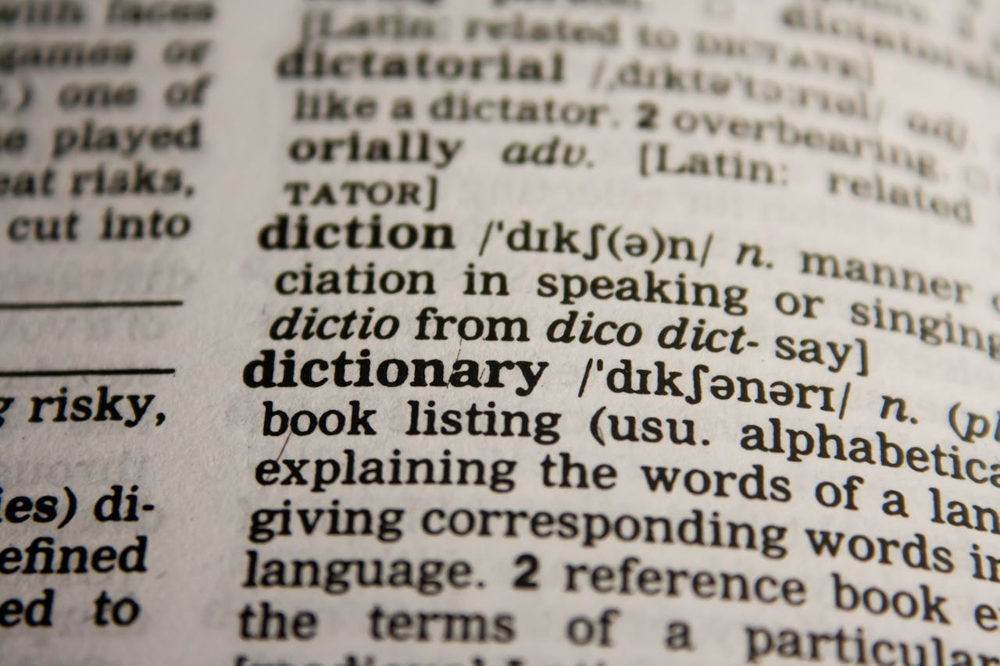

با کدام لهجه انگلیسی یاد بگیریم؟ (امریکن یا بریتیش)
یکی از اولین پرسشهایی که زبانآموزان هنگام شروع یادگیری زبان انگلیسی دارند این است که کدام لهجه را انتخاب کنند؟ لهجه آمریکایی (American English) یا لهجه بریتانیایی (British English)؟ پاسخ این سوال ساده نیست، زیرا هر دو لهجه پرکاربرد و معتبر هستند و انتخاب آنها بستگی به اهداف و شرایط یادگیری شما دارد.
تفاوتهای اصلی بین لهجه آمریکایی و بریتانیایی
لهجهها تنها در تلفظ با هم تفاوت ندارند، بلکه در موارد دیگری مانند لغات، املا و حتی گرامر نیز تفاوتهایی دیده میشود. برخی از مهمترین تفاوتها عبارتند از:
- تلفظ: در لهجه بریتانیایی صدای "r" معمولا کمتر تلفظ میشود، در حالی که در لهجه آمریکایی واضحتر است.
- لغات: برای مثال، آمریکاییها به آسانسور میگویند Elevator، اما بریتانیاییها میگویند Lift.
- املا: در انگلیسی آمریکایی معمولا کلماتی مثل "Color" سادهتر نوشته میشوند، اما در بریتانیایی به صورت "Colour".
- گرامر: تفاوتهای کوچکی مثل استفاده از زمان حال کامل در بریتانیایی بیشتر از آمریکایی رایج است.
مزایای یادگیری لهجه آمریکایی
از آنجایی که رسانههای آمریکایی (فیلمها، سریالها و موسیقی) در جهان بسیار پرطرفدار هستند، یادگیری لهجه آمریکایی باعث میشود راحتتر این محتواها را درک کنید. همچنین در بسیاری از کشورهای غیرانگلیسی زبان، لهجه آمریکایی بیشتر آموزش داده میشود و منابع آموزشی بیشتری برای آن وجود دارد.
مزایای یادگیری لهجه بریتانیایی
لهجه بریتانیایی به دلیل رسمیتر بودن و ریشه تاریخی زبان انگلیسی، در بسیاری از دانشگاهها و آزمونهای بینالمللی (مثل IELTS) بیشتر دیده میشود. اگر قصد تحصیل در اروپا یا ارتباط کاری با کشورهای اروپایی را دارید، لهجه بریتانیایی میتواند انتخاب بهتری باشد.
کدام لهجه برای شما مناسبتر است؟
انتخاب لهجه مناسب بستگی به هدف شما دارد. اگر بیشتر با فیلمها، سریالها و فرهنگ آمریکا در ارتباط هستید، یادگیری لهجه آمریکایی منطقیتر است. اما اگر قصد ادامه تحصیل یا کار در اروپا را دارید، لهجه بریتانیایی برای شما کاربردیتر خواهد بود. در نهایت مهمترین نکته این است که لهجه انتخابی را ثابت و پیوسته تمرین کنید.
نقش اپلیکیشن زبان یار در یادگیری لهجه
اپلیکیشن زبان یار به شما کمک میکند هر دو لهجه را بشنوید و مقایسه کنید. در این اپلیکیشن، تمرینهای شنیداری و گفتاری با لهجههای مختلف وجود دارد که باعث میشود گوش شما به هر دو لهجه عادت کند. همچنین میتوانید با انتخاب مسیر یادگیری خود، روی لهجه دلخواه تمرکز کنید.
جمعبندی
انتخاب بین لهجه آمریکایی و بریتانیایی موضوعی شخصی است و هیچ پاسخ درست یا غلطی ندارد. هر دو لهجه معتبر هستند و برای موفقیت در زبان انگلیسی کافی است یکی را انتخاب کرده و به صورت مداوم تمرین کنید. اپلیکیشن زبان یار بهترین همراه شما در این مسیر خواهد بود و با تمرینهای هدفمند، یادگیری لهجه را سادهتر میکند.
امیدواریم این مقاله برای شما مفید بوده باشد. برای مقالات بیشتر، به صفحه بلاگ های زبان یار سر بزنید.